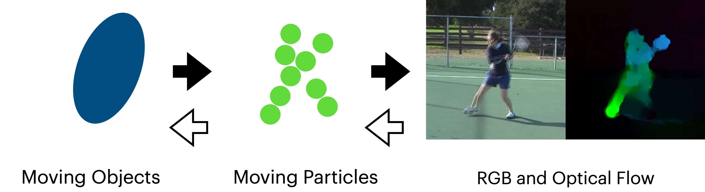
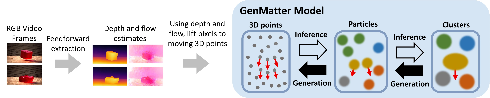
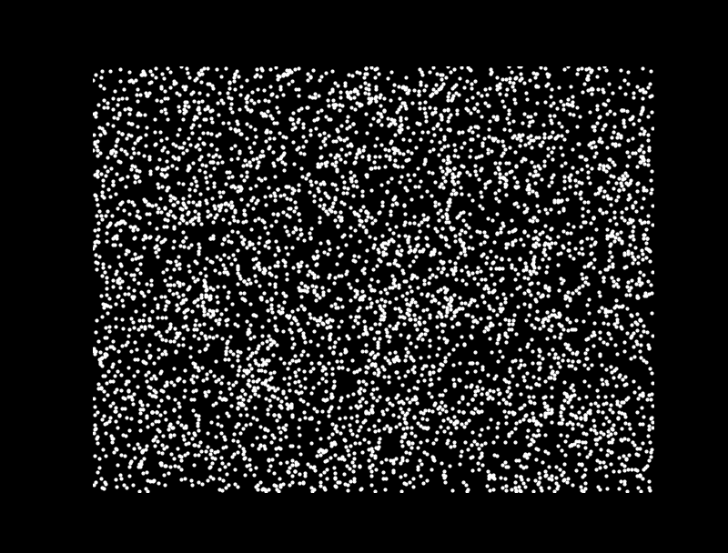
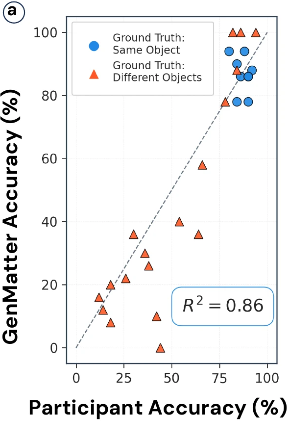
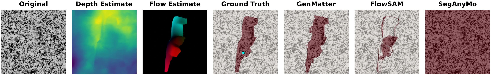

GenMatter: Perceiving Physical Objects with Generative Matter Models
Project page & videos
Abstract
- GenMatter frames perception as Bayesian inference in a generative model of matter.
- A scene is particles (small Gaussians of local matter) grouped into clusters (independently moveable objects), recovered without learning, through probabilistic inference.
- One model spans random dots, camouflaged textures, and natural video, where biological vision succeeds but computer vision does not.
One model, three settings
Random dots, camouflage, and natural video. Human vision groups the moving object in all three, and no existing computer vision system does.

One model, run both ways: forward, it renders a scene (solid arrows), and inverted, it perceives the objects (hollow arrows).
- Motion comes in rigid pieces: each object shares one rigid motion, and grouping segments that motion into objects.
- Domain-general by construction: the same model perceives all three settings, with no per-task training or hand-crafted regularizers.
The generative matter model

Depth and flow lift every pixel to a moving 3D point, and perception inverts that generative process.
- Two-level hierarchy with slack: an object is a cluster of particles that can deviate from the cluster’s rigid motion, so one model fits both rigid and deformable objects.
- Perception is inference: GenMatter infers the hidden objects and their motions, grouping the particles that move as one.
Object perception from dot motion
Stimulus

GenMatter inference

150 participants judged whether two probe dots share an object across 27 kinematograms. GenMatter matches them at r2 = 0.86.
- Cluster grouping is essential: without the cluster layer, 5- and 500-particle variants reach only r2 = 0.35 / 0.41, with learned FlowSAM at r2 = 0.04, far below the full model.
- Captures graded uncertainty: the model’s confidence tracks how often people group the dots, staying calibrated even on the hardest, most ambiguous trials.
Structure from motion in camouflage
A 3D object in camouflage, with no boundary in the texture. The rotation reveals its shape, and GenMatter infers that object as a mask.

Depth is uninformative, so GenMatter recovers the rotating object from the 3D motion. FlowSAM degrades over time, and SegAnyMo fails to find it.
- Outperforms the learned baselines: higher Jaccard than FlowSAM on 111 of 140 videos and SegAnyMo on 133 of 140, even with depth ablated and motion as the only cue.
| Metric | SegAnyMo | FlowSAM | GenMatter |
|---|---|---|---|
| Accuracy | 0.33 [.28, .37] | 0.87 [.85, .88] | 0.94 [.93, .94] |
| Jaccard | 0.26 [.22, .31] | 0.67 [.63, .70] | 0.72 [.70, .74] |
Mean accuracy and Jaccard [95% bootstrap CI].
Natural video
Mid-level structure and novel views from 3D particles: real-time inference turns an input video into a 3D particle model, read out as a segmentation and 2.5D object and background surfaces (left), and re-rendered from cameras reposed 28° left and 20° right (right).
| Metric | CoTracker3 | GenMatter | Ablation |
|---|---|---|---|
| Jm (SAM) | 0.78 [.69, .87] | 0.79 [.73, .84] | 0.69 [.61, .77] |
| Jm (GT) | 0.78 [.69, .87] | 0.77 [.73, .84] | 0.68 [.58, .73] |
- Matches a supervised tracker, training-free: projecting inferred 3D particles to 2D reaches CoTracker3’s DAVIS accuracy (Jm, 95% bootstrap CI), while the ablation without the cluster hierarchy falls short.
Conclusion
- One model, many viewing conditions: a single probabilistic engine spans random dots, camouflage, and natural video, approaching the generality of biological vision that no single learning system has matched.
- Bridges human vision and computer vision: object-level scene understanding emerges from structured inference.